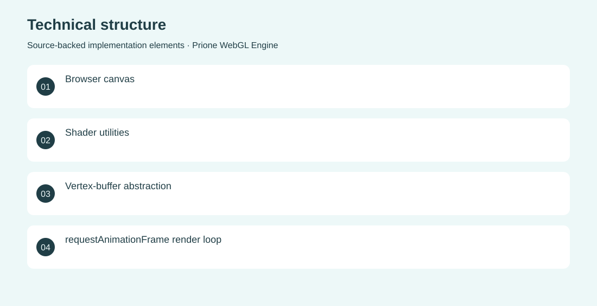

The project
Explore the rendering primitives behind interactive browser graphics. A TypeScript engine initializes WebGL, compiles shaders, manages vertex buffers and uniforms, and drives a responsive animation loop. Implemented the engine structure, shader and buffer utilities, and a triangle-rendering demonstration. Archived technical experiment; not a complete game engine.
The problem
Explore the rendering primitives behind interactive browser graphics.
The solution
A TypeScript engine initializes WebGL, compiles shaders, manages vertex buffers and uniforms, and drives a responsive animation loop.
My contribution
Implemented the engine structure, shader and buffer utilities, and a triangle-rendering demonstration.
Technical structure

The portfolio cover is an editorial illustration. No live product screenshot is presented for this project.
Showcase assets
{kind=link}
{kind=link}
{kind=link}
New portfolio identity. Newly designed marks are portfolio treatments, not claims of official client branding.